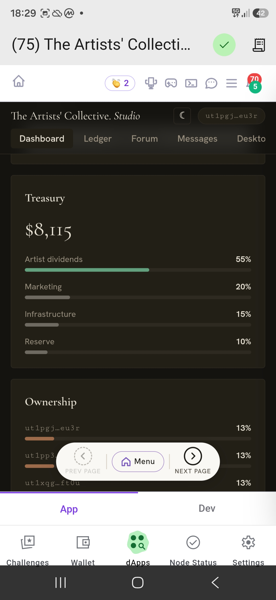
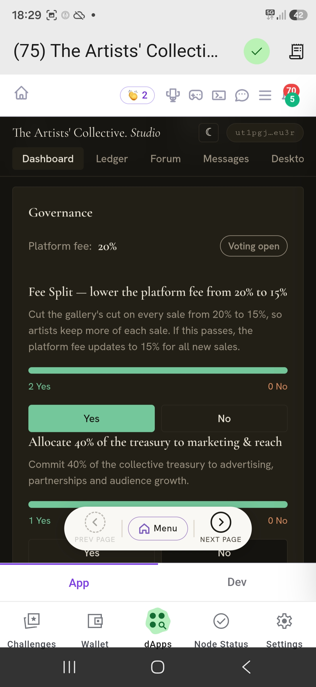
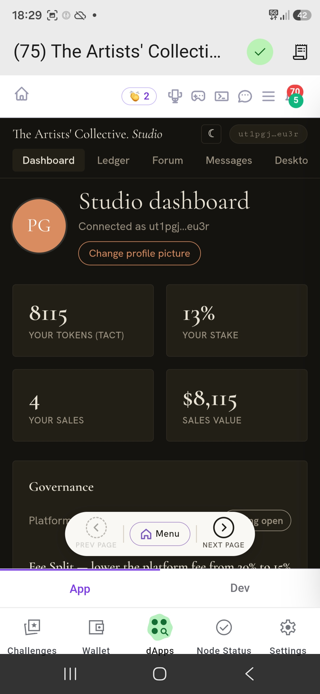
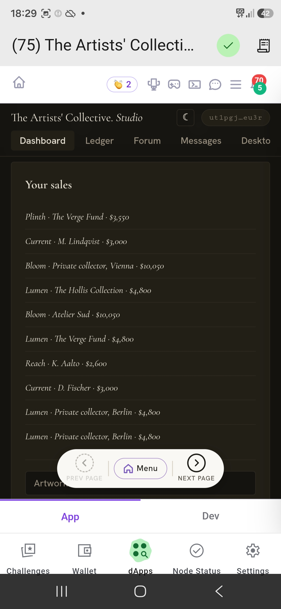
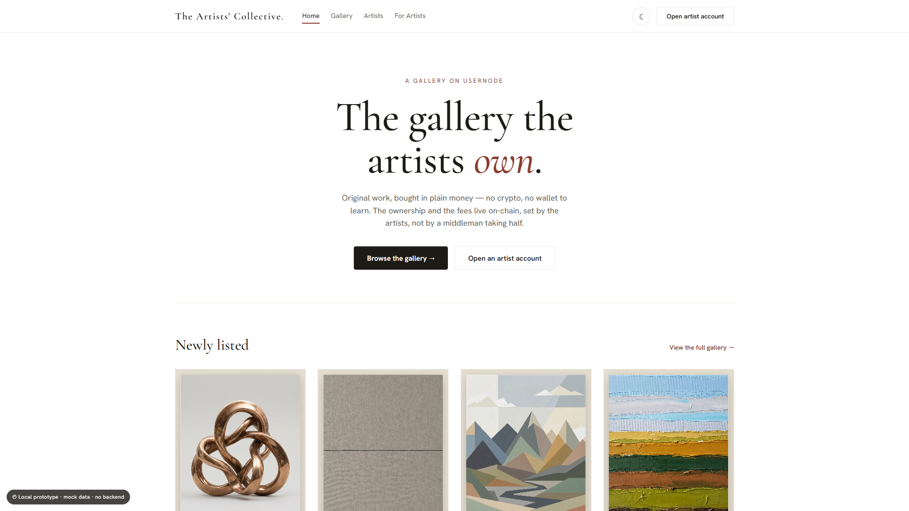

Usernode Dapp Hackathon · technical write-up
A decentralised, artist-owned marketplace for original art, built on Usernode. This page is the deeper read behind the short pitch: the architecture, exactly what runs on-chain, the components we built, and the market the project targets.
Overview
The Artists' Collective is an online marketplace for original art in which the artists are the owners. It pairs a conventional fiat storefront for buyers with a native Usernode dApp for artists, both reading from and writing to a single on-chain data layer.
Buyers never touch a wallet or a token. They browse, pay in fiat, and receive a normal web checkout. Artists get something the incumbent platforms do not offer: on-chain membership, governance over the platform's economics, and a verifiable record of every sale. The blockchain is the trust layer underneath a familiar web experience, not a feature the user has to learn.
Architecture
The product is split into two front-ends with different audiences and constraints, connected through one shared data layer that is mirrored on Usernode.
A static single-page app served on Cloudflare Pages, with Functions for dynamic routes, D1 (SQL) for the catalogue and artist profiles, and R2 for artwork and portrait storage.
SEO-indexable, fiat checkout, no wallet. This is what a collector sees.
Runs inside the Usernode mobile app and standalone. Artists authenticate with their own Usernode wallet through the bridge APIs (getNodeAddress, sendTransaction, getTransactions), with the native runtime detected via an async handshake.
Membership, governance and the on-chain ledger live here.
Enrolling on the dApp publishes the artist's live profile and gallery to the buyer website. Avatars and galleries stay in sync across both surfaces.
A magic-link bridges a phone-held wallet session to a desktop browser, so an artist can manage the store from either device.
On-chain
Every artist-facing action is a real Usernode transaction on the testnet, signed and verifiable. The mechanics:
Actions that belong to the artist (enrolment, votes) are signed by the artist's own Usernode key and approved in the app. There is no custodial shortcut for those.
Enrolling as a member-owner is a Usernode transaction. Joining the collective is recorded on the chain, not in a private database alone.
A member vote changes the real platform fee (for example 20% to 15%). The tally is on-chain and the result moves the live number, rather than being a cosmetic poll.
Each enrol, sale and vote is encoded as a self-send carrying a base64url JSON memo. The full event (work, price, artist share, fee) is reconstructable from the public explorer.
A self-hosted Usernode node plus an app-key signer lets the platform post a receipt for a sale server-side, through the node's wallet RPC, with no manual approval tap. The chain fee is zero; the platform fee is carried as data in the memo.
Every action is written to the platform database first, then best-effort to the chain. If a send fails the product stays consistent and reports honestly. It keeps working even when the chain is unavailable.
For the hackathon demo, the fiat payment rail (card capture) is simulated by a bot so the end-to-end flow can be shown; the on-chain side is built and deployed on the Usernode testnet. Sales settle in fiat off-chain; the chain holds the immutable record of what happened, including the fee as data.
The core idea
The hard part of any fiat-to-chain system, named honestly: linking an off-chain payment to its on-chain record needs a trusted attestation that the sale really happened. Our answer is to anchor that trust to Stripe.
When a buyer pays by card, Stripe issues a cryptographically signed confirmation that the money changed hands. That signed proof is what gets written to Usernode. The chain never takes the gallery's word for a sale; it is anchored to Stripe's signed receipt. Every artist can then verify, independently and without trusting us, that a sale was real — for the exact amount, with the exact fee split.
A normal fiat checkout. No wallet, no token.
Stripe returns a cryptographically signed receipt — the source of truth.
That signed proof is recorded on Usernode as a verifiable receipt.
Anyone can confirm the sale from the explorer, trustlessly.
Refunds follow the same logic: the chain can't delete, so a refund is a reversing entry, and fees sit in a holding period before they count — the way Stripe and the marketplaces already work.
This is the proposed trust bridge, put up for discussion. For the hackathon demo it's simulated by a bot; the production design uses Stripe's signed webhooks. If there's a cleaner attestation mechanism, we want to hear it.
Components
The pieces that make up the project, end to end.
The artist surface
The dApp side of the gallery. Each panel is backed by a Usernode transaction.





The market
The structural problem is ownership. Artists depend on marketplaces they do not own and have no say in, and pay 40 to 50 percent for being listed on what is, mechanically, a website. The Artists' Collective inverts that: the marketplace is owned and governed by the artists who fill it.
For Usernode, this is a large population of non-crypto users with a concrete, non-speculative reason to transact on-chain: ownership, fairer economics, and a real vote. They arrive for a better gallery and leave as on-chain users, without having to learn the word "blockchain."